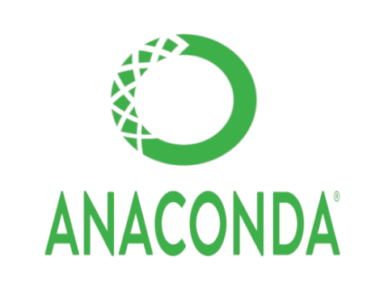
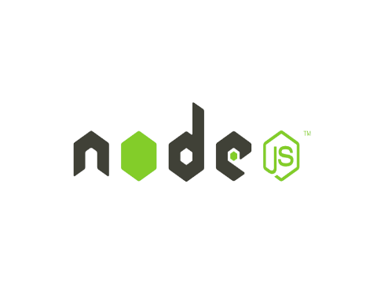
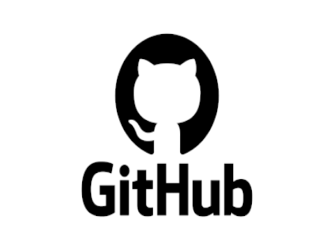
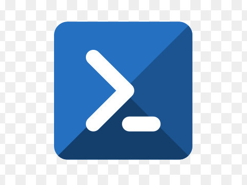

Languages, frameworks, libraries, paradigms and other tools to learn about

Versatile programming language for Web development, Data analysis, Machine learning, Automation, Scientific computing,
Game development and Desktop applications
Java is a general-purpose, object-oriented language that is used for Web development, Mobile development, Enterprise
applications, Big data, Scientific computing, Game development and Desktop applications

TypeScript is a superset of JavaScript. JS or TS is used for Web development, Server-side development, Desktop
applications, Mobile development and Game development

PHP is a server-side scripting language that is used for Web development, Server-side scripting, Command-line scripting,
Desktop applications and Content management systems

C# is a modern object-oriented language developed by Microsoft that runs on the .NET Framework . It is used for Web
development , Desktop applications, Mobile development, Game development, Artificial intelligence and Windows
applications

C++ is one of the most widely-used low level programming language that is used in Game development, Operating systems,
System software, Financial systems and High-performance computing

HTML is the foundation of the web and is used to structure content, add images and videos, and create links between
pages

CSS is used to style and layout web pages

Django is a high-level Python web framework that enables rapid development of secure and maintainable websites. It can
be used to build almost any type of website, from content management systems and wikis, through to social networks and
news sites

Flask is a lightweight and microframework for web development that can be used to create a variety of web applications,
such as social networks, blogging platforms, weather apps, portfolio websites, feedback forms, rest APIs, and machine
learning models

Anaconda is a Python distribution that is widely used in data science, machine learning, and deep learning

The Spring Framework in Java is utilized across various types of applications such as web applications, enterprise
software, microservices, and cloud-based applications to streamline development, improve maintainability, and enable
efficient integration of diverse systems and services

Node.js, a JavaScript runtime environment, is employed for crafting scalable, fast, and efficient server-side
applications, particularly in web development, harnessing its event-driven architecture and asynchronous I/O
capabilities

Express.js is a minimalist and flexible Node.js web application framework that simplifies the creation of robust and
scalable web applications, offering a range of powerful features for routing, middleware integration, and handling HTTP
requests and responses
Next.js is a React-based framework used for building modern web applications, offering server-side rendering, automatic
code splitting, simplified routing, and built-in support for various features like CSS modules and API routes,
facilitating the development of performant and SEO-friendly web applications

React is a JavaScript library primarily used for building user interfaces for web applications, enabling the creation of
interactive, reusable UI components that efficiently update and render based on data changes, fostering a more
declarative and efficient approach to building modern web interfaces

Vue.js is a progressive JavaScript framework used for building user interfaces and single-page applications, providing
developers with a versatile and approachable framework that allows for easy integration, reactivity, and component-based
architecture, enhancing the development of interactive and dynamic web applications
Angular is a comprehensive TypeScript-based framework developed by Google for building robust, scalable, and
feature-rich web applications, offering a structured framework for building single-page applications (SPAs) with
powerful features like two-way data binding, dependency injection, and modular architecture, facilitating the
development of complex and maintainable applications

Laravel is a powerful and elegant PHP web framework known for its expressive syntax, extensive features, and
developer-friendly environment, offering tools for building secure, scalable, and maintainable web applications with
features like routing, ORM, authentication, and a rich ecosystem of packages, streamlining the development process

ASP.NET is a robust and versatile web framework developed by Microsoft, used for building dynamic and scalable web
applications and services, offering tools, libraries, and support for various programming languages like C#, enabling
rapid development, security features, and seamless integration with other Microsoft technologies
Structured Query Language (SQL) is a standard programming language designed for managing, manipulating, and querying
relational databases, providing commands and syntax for tasks such as retrieving, inserting, updating, and deleting data
in a structured and organized manner, essential for interacting with and managing data in database systems
NoSQL (Not Only SQL) is a term used for databases that provide a flexible approach for managing and storing unstructured
or semi-structured data, offering alternatives to traditional relational databases
Git is a distributed version control system used for tracking changes in software development projects, facilitating
collaboration among developers working on the same codebase. It allows users to manage versions, track modifications,
merge changes from different contributors, and maintain a history of revisions, providing features for branching,
committing, merging, and more

GitHub is a web-based platform and hosting service for software development projects that utilize the Git version
control system. It offers features for collaboration, code management, issue tracking, and project management, providing
developers with tools for hosting repositories, managing code changes, facilitating collaboration among teams, and
contributing to open-source projects, enhancing the workflow and visibility of software development projects

Bash, short for "Bourne Again SHell," is a command-line shell and scripting language used in Unix-based operating
systems, providing a command-line interface (CLI) for users to interact with the system. It offers a range of commands,
utilities, and scripting capabilities for executing tasks, automating processes, navigating file systems, and managing
system configurations, serving as a powerful tool for system administration, automation, and development workflows

PowerShell is a command-line shell and scripting language primarily designed for Windows operating systems, offering a
powerful command-line interface (CLI) and scripting environment. It enables users to perform various administrative
tasks, manage system configurations, automate tasks, and interact with Windows components and services using a rich set
of commands, cmdlets, and scripting capabilities, enhancing system administration, automation, and development workflows
on Windows platforms